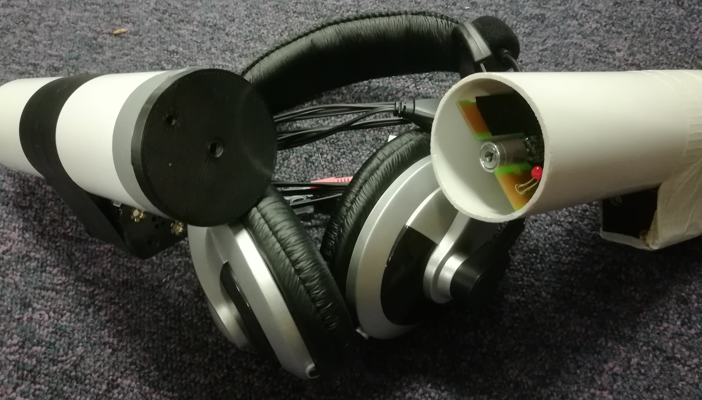

An interactive demonstration concerning communication through light. Students speak into a transmitter device and aim their laser beam at the receiver. Another student can hear the former speaking through headphones connected to the receiver. This is used to demonstrate communication mediums. First the classic cup and string demonstration is used to show communication through a solid medium, this is then followed by the through air communication of the walkie talkies. The student will have trouble aligning the laser beam with the receiver; these troubles can be acknowledged and used to move onto an optical fibre demonstration.